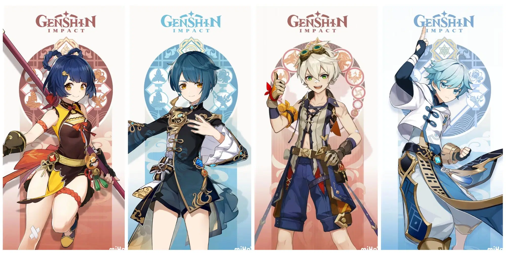
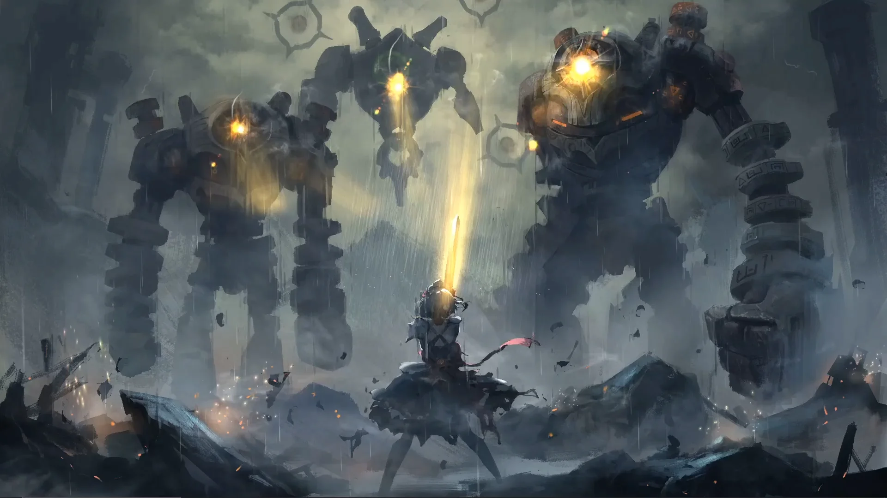

Main DPSDPS principal
Stays on the field the longest and deals most of the damage. Permanece más tiempo en campo y hace la mayor parte del daño.
Your favorite character isn't meta? What a tragedy. Oh well. Okay, let me help you make it work: here you'll see what each role does, how a team is built and what to do if you don't have the “mandatory” characters everyone recommends. ¿Tu personaje favorito no está en el meta? Qué tragedia. Ni modo. A ver, te ayudo a hacerlo funcionar: aquí vas a ver qué hace cada rol, cómo se arma un equipo y qué hacer si no tienes a los personajes «obligatorios» que todo mundo recomienda.
A character can fill several roles, so don't box them in too much. Un personaje puede cumplir varios roles, así que no hay que encasillarlos demasiado.
Stays on the field the longest and deals most of the damage. Permanece más tiempo en campo y hace la mayor parte del daño.
Deals damage from off-field: summons, fields and attacks that stay active when you switch characters. Hace daño desde fuera del campo: invocaciones, campos y ataques que siguen activos al cambiar de personaje.
Provides buffs or utility: more attack, grouping enemies, lowering resistances. Proporciona beneficios o utilidad: más ataque, agrupar enemigos, reducir resistencias.
The healer restores HP; the shielder gives shields. With one of the two, your team survives. El healer recupera vida; el shielder da escudos. Con uno de los dos, tu equipo sobrevive.
1 main DPS + 1 or 2 Sub-DPS or Supports + 1 survival character (healer or shielder). If your team looks like that, you're doing fine. 1 DPS principal + 1 o 2 Sub-DPS o Supports + 1 personaje de supervivencia (healer o shielder). Si tu equipo se parece a eso, vas bien.
I'll tell you how each one works, what's good about it, what's not so good and what to do if you're missing someone. Te digo cómo funciona cada uno, qué tiene de bueno, qué no tanto y qué hacer si te falta alguien.

A well-known, historic composition based on Vaporize, Melt and off-field damage. Xiangling and Xingqiu attack while off-screen, Bennett heals and boosts ATK, and Chongyun brings Cryo from the field. Una composición histórica muy conocida, basada en Vaporizado, Derretido y daño fuera de campo. Xiangling y Xingqiu atacan mientras no están en pantalla, Bennett cura y sube el ATQ, y Chongyun aporta Cryo desde el campo.
Variants: swap Chongyun for Beidou or Fischl to play with Overloaded, or for Sucrose to group enemies with Swirl. Variantes: cambia a Chongyun por Beidou o Fischl para jugar con Sobrecarga, o por Sucrose para agrupar enemigos con Torbellino.

A versatile option for beginners: Noelle gives shields, heals when she attacks while her shield is up, and deals the on-field damage. Gorou and Ningguang boost Geo damage and trigger the resonance; the fourth slot is flexible. Una opción versátil para principiantes: Noelle da escudo, cura cuando ataca mientras mantiene el escudo y hace el daño en campo. Gorou y Ningguang refuerzan el daño Geo y activan la resonancia; el cuarto lugar es flexible.
Alternatives: the Geo Traveler can take Ningguang's place. In the flexible slot, Bennett, Xingqiu or whoever you like the most works. Alternativas: el Viajero en su versión Geo puede tomar el lugar de Ningguang. En el espacio flexible sirven Bennett, Xingqiu o el personaje que más te guste.
Dendro Traveler · Collei · Barbara · flexible character.Viajero Dendro · Collei · Barbara · personaje flexible.
An introduction to Dendro reactions. Dendro plus Hydro creates cores that explode (Bloom). Constant application of both elements and healing are the key: the explosions can also hurt your character. Una introducción a las reacciones Dendro. Dendro más Hydro crea núcleos que explotan (Florecimiento). La aplicación constante de ambos elementos y la curación son la clave: las explosiones también pueden dañar a tu personaje.
To improve it: Xingqiu or Mona apply more Hydro. If you add an Electro character (Kuki Shinobu, Fischl or Lisa), the cores turn into Hyperbloom. Para mejorar: Xingqiu o Mona aplican más Hydro. Si agregas un personaje Electro (Kuki Shinobu, Fischl o Lisa) los núcleos se convierten en Hiperflorecimiento.
No team is mandatory. I tell you the good, the bad and the alternatives; you decide. Ningún equipo es obligatorio. Yo te digo lo bueno, lo malo y las alternativas; tú decides.
Free characters, four-stars and five-stars from the standard banner: the ones a new account is most likely to have. Personajes gratuitos, de cuatro estrellas y de cinco estrellas del banner permanente: los que una cuenta nueva tiene más probabilidades de tener.